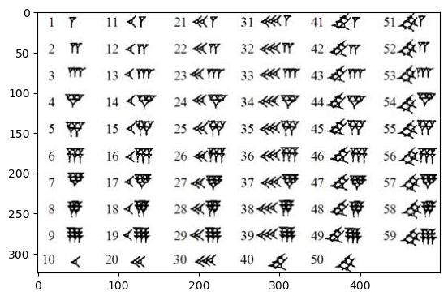
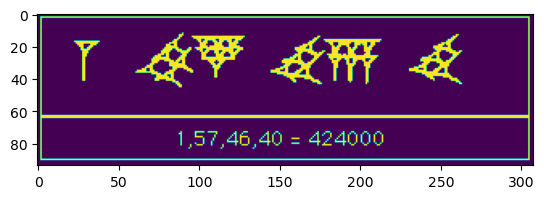

Appendix - may be needed for reference#
import os
print(os.getcwd())
/Users/ngcchk/Documents/GitHub/gpd2-win-unity1/ipadred-rain/imgno_book1/imgnobk1
import lib.main.a0_babylon_pos_0
not in main of a0
lib.main.a0_babylon_pos_0.display_img(1)

note
a) there are only 2 symbols 1 and 10
b) every number is actually by placing and counting number 1 and number 10 out; FULLY
c) reaching 59 then what ... 60 is a problem let us skip it first ;-P
lib.main.a0_babylon_pos_0.display_img(2)

lib.main.a0_babylon_pos_0.display_img(3)
%matplotlib inline
import lib.main.a1_i_mul_plot
lib.main.a1_i_mul_plot
not via main
it is a rotation
and i always rotate 90 degree or pi/2 radians

%matplotlib inline
lib.main.a1_i_mul_plot.some_plot()
-- more example--


#import lib.main.e5_i_anim_hyperplot
print ("c3; red start and blue end")
import lib.main.c3_i_anim_circle_rotate_plot
import numpy as np
lib.main.c3_i_anim_circle_rotate_plot.plot_i_circle(np.pi/4)
c3; red start and blue end
lib.main.e5_i_anim_hyperplot
not via e5 main
/Users/ngcchk/Documents/GitHub/gpd2-win-unity1/ipadred-rain/imgno_book1/imgnobk1
not vai c3 main
index: 108
theta4 at 18.217020487930075
a= 0.8065311753227261 b= -0.5911915622135875
print ("another example - c3; red start and blue end")
import lib.main.c3_i_anim_circle_rotate_plot
import numpy as np
#lib.main.c3_i_anim_circle_rotate_plot.do_anim()
# need to run in terminal for the moment???
another example - c3; red start and blue end
import lib.main.e5_i_anim_hyperplot
print(lib.main.e5_i_anim_hyperplot.lorentz_t_t00())
print(lib.main.e5_i_anim_hyperplot.lorentz_t_f00())
lib.main.e5_i_anim_hyperplot.hyperplot_and_tell()
[0, 6.928203230275509]
[-4.618802153517006, 9.237604307034012]